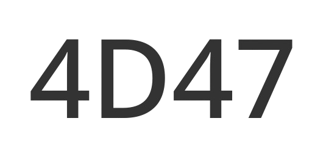

About Myself
This site serves as a central information page for my explorations of the sciences, religion, and music.
Here is my wiki site wiki!
Links to other relevant profiles

adiyen Hiremagalur Kodanda Ramachandra Swamy dasan

This site serves as a central information page for my explorations of the sciences, religion, and music.
Here is my wiki site wiki!
adiyen Hiremagalur Kodanda Ramachandra Swamy dasan